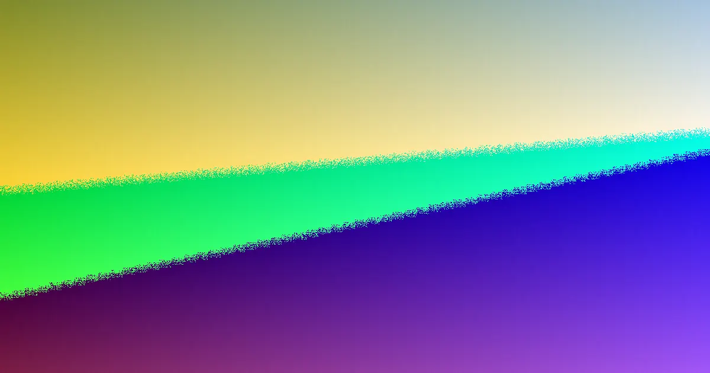

For local buyers, web design brisbane quotes explained understanding the factors that influence cost, scope, and delivery timelines.
Web Design Brisbane Quotes Explained Explained
When seeking web design in Brisbane, understanding the nuances of cost, project scope, and expected timelines is paramount. The decision-making process often circles back to these core elements. A small business brochure website, for instance, commonly falls within the $2,500 to $7,500 price bracket and typically requires 4 to 10 weeks for completion. For projects demanding a more polished, lead-generation focus, the investment generally sits between $7,500 and $15,000. Significantly more complex undertakings, such as custom builds or comprehensive eCommerce platforms, start at a higher price point and commonly require a minimum of 12 weeks, with the overall duration being heavily influenced by the promptness of content provision and client feedback.
For businesses evaluating web design Brisbane options, the most effective starting point is to align your budget, preferred platform, and desired launch date with the specific objectives your website needs to achieve, whether that's generating enquiries or driving sales.
Defining Your Website's Purpose and Platform
Web Design Brisbane Australia offers a diverse range of services, including custom builds, small business websites, WordPress projects, eCommerce stores, redesigns, landing pages, SEO-friendly builds, and ongoing care plans. This comprehensive list serves as a valuable filtering tool. Before requesting a quote, it's essential to determine the primary function of your website. Does it need to generate phone calls, capture enquiry forms, facilitate sales conversations, or process online orders? This fundamental decision significantly shapes all subsequent aspects of the project.
A service-based business, for example, might only require a concise brochure site with clear calls to action. Similarly, a campaign-specific landing page can be more streamlined if the focus is on a single offer or launch. If this initial strategic decision is overlooked, project discussions can easily drift towards aesthetic preferences before the underlying business case is firmly established.
The choice of platform should also consider ease of handover and daily operation. WordPress is often recommended for its flexibility and user-friendliness, empowering teams to update text, images, and pages without constant reliance on a developer. For eCommerce ventures, platforms like Shopify and WooCommerce are specifically designed for managing product catalogues, streamlining checkout processes, and handling ongoing administration, making them the logical choice for online stores.
Website redesigns present a unique set of considerations. The focus here is on modernising an outdated or underperforming site while preserving existing search engine rankings. This necessitates a thorough audit of important pages, existing URLs, and the content that currently drives enquiries. Failing to map these elements early in the process can lead to avoidable launch complications, even if the visual outcome is superior.
Using Price Ranges and Understanding Timelines
The provided price ranges offer a practical method for assessing project scope rather than simply seeking the lowest cost. A small business brochure website typically ranges from $2,500 to $7,500. A more sophisticated, lead-focused website generally falls between $7,500 and $15,000. eCommerce and highly customised projects will naturally start at higher figures. While these ranges are not a substitute for a formal quote, they provide a valuable benchmark for determining if your project requirements and budget are reasonably aligned.
When obtaining quotes, it's beneficial to ask specific questions. Inquire about who will be responsible for copywriting, image sourcing, the number of review rounds included, and whether training is part of the handover process. Clarify which launch tasks are covered and whether post-launch support is included in a care plan or billed separately. These details often provide a clearer explanation for price variations than a visual mock-up alone.
Similarly, the timing guidance is concrete. A simple brochure site commonly takes 4 to 10 weeks. WordPress or small business sites usually require 6 to 10 weeks. eCommerce or custom builds typically begin at 12 weeks and can extend over several months. This highlights that timing is as much a planning issue as a production commitment. The speed at which content is supplied and feedback is provided are the most significant factors affecting delivery times. To manage this effectively, businesses should assign internal owners before work commences - individuals responsible for approvals, content gathering, and resolving late-stage changes. Without this structure, even modest projects can stall, whereas with it, schedules are more likely to be maintained as decisions are made promptly.
Local Relevance and SEO Foundations
The value of a local web designer is often practical rather than merely a marketing slogan. A Brisbane-based team typically possesses a deeper understanding of the local market and offers greater accessibility for timely updates and changes. This local insight can translate into more relevant page priorities, appropriate offer language, and effective enquiry pathways tailored to the specific Brisbane audience.
Furthermore, the source material indicates that websites are built with a mobile-first approach, prioritising speed and robust SEO foundations to ensure they are ready to rank effectively in search engines from the outset. It's important to recognise that ongoing search engine performance is influenced by market competition and the quality of content. No reputable provider can honestly guarantee a specific search engine position. Therefore, focusing on structural integrity, site speed, and strategic page planning often proves more beneficial than relying on ranking promises alone.
This guide is particularly useful for individuals launching their first website, businesses planning a redesign, teams seeking editable website solutions, and operators transitioning into online sales. Each group should carefully consider questions related to ownership, training, and ongoing support before approving a web design project.
- Define Your Website's Goal. Determine if your website needs to generate enquiries, support sales, or sell products directly before comparing design options.
- Select the Right Platform. Choose between a brochure site, WordPress, a landing page, a redesign, or an eCommerce store based on your editing needs and sales process.
- Understand Pricing Factors. Use price ranges to gauge scope, not just to find the cheapest option. Ask detailed questions about what's included in the quote.
- Plan for Timelines. Recognise that content and feedback speed significantly impact project duration. Assign internal owners for approvals and content gathering.
- Consider Local Expertise. Evaluate how a local designer's understanding of the Brisbane market can benefit your specific business needs and target audience.
This guide explains the typical costs, scope, and timelines involved in web design projects for Brisbane businesses.